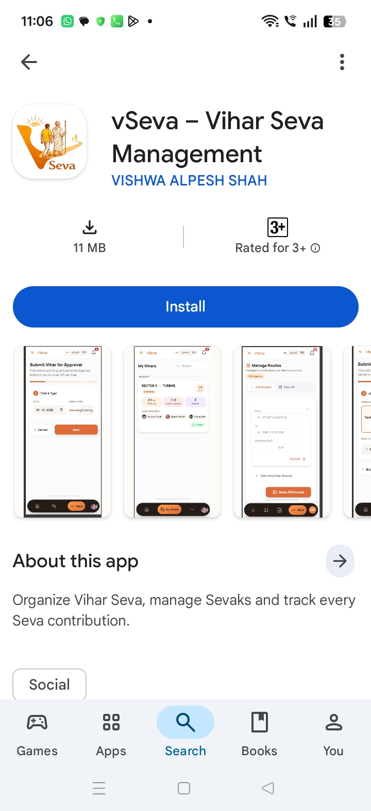
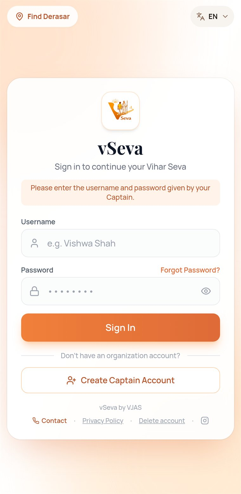
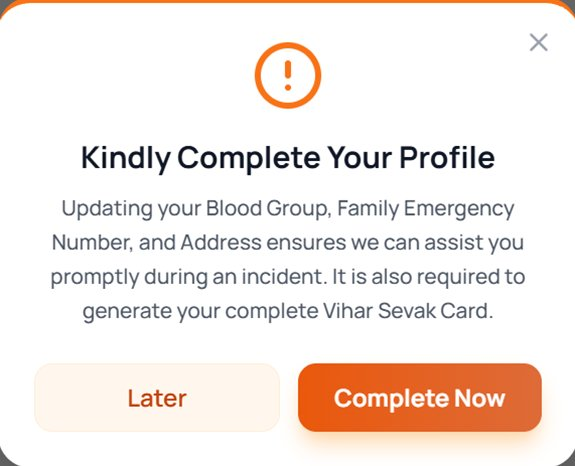
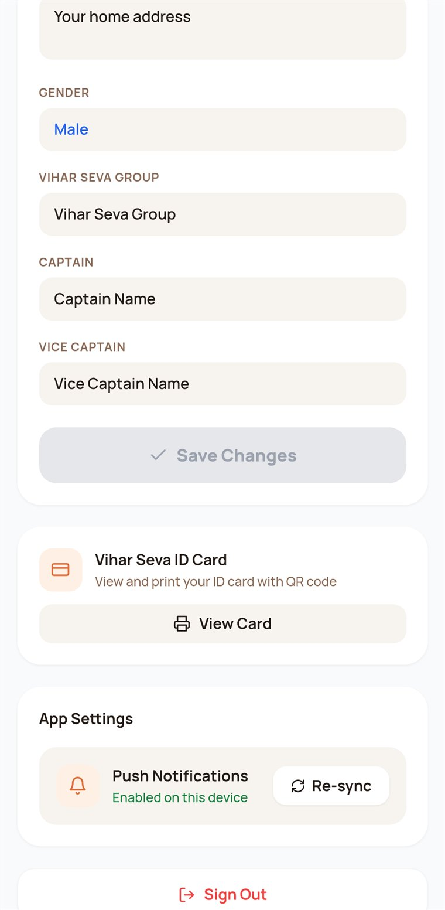
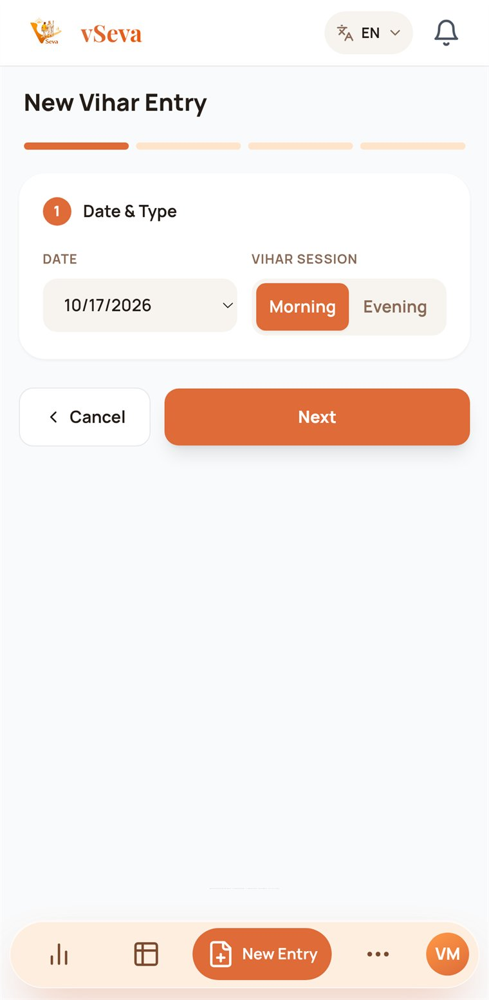
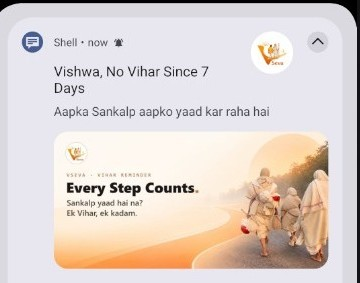
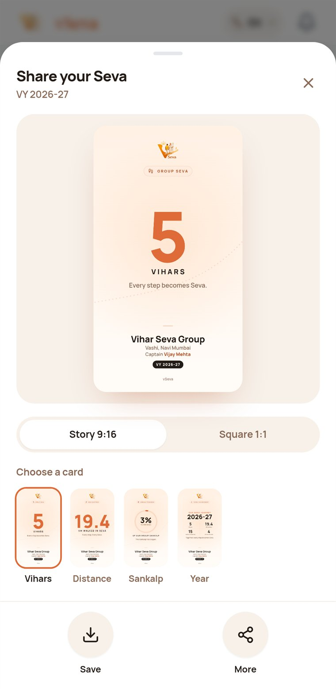
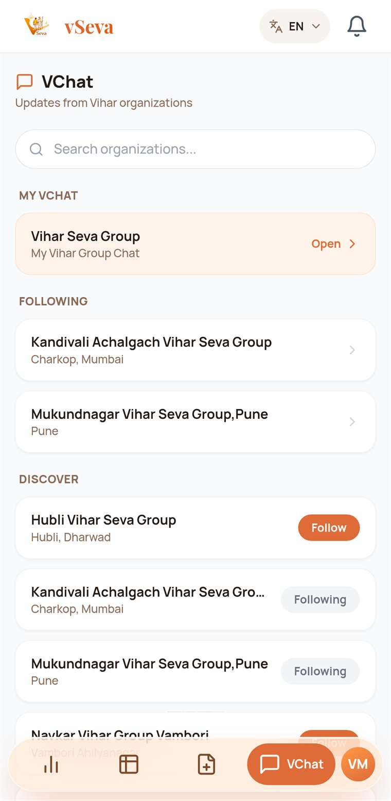

अपनी सेवा के आँकड़े देखें और प्रेरणा बनें।हर कदम मायने रखता है।
अपने फ़ोन से विहार दर्ज करें, अपना संकल्प पूरा करें और अपनी सेवा साझा करके दूसरों को प्रेरित करें।
किसके लिए
विहार सेवक
प्रस्तुतकर्ता
नवंबर 2026
दर्ज करें ✱ देखें ✱ सेवा करें ✱ साझा करें
GOOGLE PLAY पर ANDROID ऐप · VSEVA.VJAS.IN
Alpesh Shah +91 93245 03214 · Vishwa Shah +91 95945 03214 contact@vjas.in
स्वागत02 / 18
हर विहार काएक रिकॉर्ड।
vSeva जैन विहार सेवा ग्रुप के लिए ऐप है। सेवक हर विहार एक मिनट में दर्ज करते हैं; कैप्टन पूरा ग्रुप देखते हैं: किसने सेवा की, कौन-से रूट, कितने किलोमीटर, और साल कैसा चल रहा है।
शुरुआत Google Play Store से vSeva ऐप इंस्टॉल करके करें।
GOOGLE PLAY पर उपलब्ध
vSeva – Vihar Seva Management
खोलने के लिए QR स्कैन करें
1
Play Store खोलें
अपने Android फ़ोन में Google Play Store खोलें।
2
“vSeva” खोजें
या QR स्कैन करें। vSeva – Vihar Seva Management चुनें।
3
Install करें, फिर Open
Install दबाएँ, फिर Open। नोटिफ़िकेशन की अनुमति दें।
4
साइन इन करें
कैप्टन द्वारा WhatsApp पर भेजा गया यूज़रनेम डालें, और पासवर्ड में अपना मोबाइल नंबर।

Google Play पर vSeva
iPhone है? Safari से
iPhone / iPad
1
Safari में vseva.vjas.in खोलें
2
Share (तीर ↑ वाला चौकोर) दबाएँ
3
Add to Home Screen दबाएँ, फिर Add
4
होम स्क्रीन से vSeva खोलें
नोटिफ़िकेशन चालू रखें: आने वाले विहार, अप्रूवल, रिमाइंडर और जन्मदिन की शुभकामनाएँ इन्हीं से मिलती हैं।
vSeva · सेवक गाइड
प्लेटफ़ॉर्म04 / 18
vSeva क्याकरता है।
01
विहार दर्ज करें
चार चरणों का फ़ॉर्म। दूरी ग्रुप के रूट से अपने-आप आती है।
02
कैप्टन अप्रूवल
सेवकों के विहार कैप्टन के अप्रूवल का इंतज़ार करते हैं।
03
आँकड़े और संकल्प
किलोमीटर, लगातार दिन, रैंक, लीडरबोर्ड और सालाना लक्ष्य।
04
सदस्य और रूट
कैप्टन लॉगिन बनाते हैं और रूट की सूची रखते हैं।
05
अलर्ट, VChat, संपर्क
आने वाले विहार के अलर्ट, ग्रुप चैट, कॉल और WhatsApp।
06
रिपोर्ट और शेयरिंग
PDF / Excel रिपोर्ट, सेवा कार्ड और विहार सेवा ID कार्ड।
07
डायरेक्टरी और देरासर
सार्वजनिक डायरेक्टरी और पास के देरासर खोजने की सुविधा।
English, ગુજરાતી और हिंदी में: किसी भी स्क्रीन पर ऊपर EN दबाकर भाषा बदलें।
vSeva · सेवक गाइड
सेवक गाइड05 / 18
आपका पहलासाइन-इन।
1
ऐप खोलें
Google Play से इंस्टॉल किया vSeva खोलें।
2
साइन इन करें
कैप्टन से मिला यूज़रनेम, और पासवर्ड में मोबाइल नंबर।
3
सबसे पहले अपना विहार संकल्प सेट करें
अपनी फ़ोटो → My Sankalp → Edit दबाएँ। इस विहार वर्ष में कितने विहार करेंगे, वह लिखकर सेव करें। Home पर रिंग आपकी प्रगति दिखाती है।
4
अपनी प्रोफ़ाइल पूरी करें
अपनी फ़ोटो और जानकारी भरें (अगला पेज)।

साइन इन
पासवर्ड भूल गए?Forgot Password? दबाकर यूज़रनेम डालें। कैप्टन को सूचना जाती है और वे पासवर्ड फिर से आपका मोबाइल नंबर कर देते हैं।
vSeva · सेवक गाइड
सेवक गाइड06 / 18
प्रोफ़ाइल100% पूरी करें।

साइन इन के बाद, जब तक हर जानकारी न भरी जाए, vSeva आपसे प्रोफ़ाइल पूरी करने को कहता है। Complete Now दबाएँ, या Later दबाएँ तो अगली बार फिर याद दिलाया जाएगा।
फ़ोटो के चारों ओर की रिंग बताती है कि प्रोफ़ाइल कितनी पूरी है

Your Details भरें, फिर Save Changes
ये सब भरें
☐ प्रोफ़ाइल फ़ोटो (फ़ोटो पर कैमरा दबाएँ)☐ जन्म तिथि (दिन, महीना, वर्ष)☐ ब्लड ग्रुप☐ परिवार के इमरजेंसी संपर्क का नाम☐ परिवार का इमरजेंसी नंबर☐ व्यवसाय (Other हो तो विवरण)☐ पता
क्यों ज़रूरी है: किसी घटना के समय ग्रुप आपके परिवार तक जल्दी पहुँचकर मदद कर सके। कैप्टन हर सेवक की बाकी जानकारी देख सकते हैं।
vSeva · सेवक गाइड
सेवक गाइड07 / 18
ऐप मेंकहाँ क्या है।
Home: आपका संकल्प और आँकड़े
More: बाकी सभी सुविधाएँ
Home
आँकड़े, संकल्प, हाल की गतिविधि
My Vihars
वे सभी विहार जिनमें आप शामिल थे
More
Add Vihar, Group Analytics, VChat, Contacts, Notifications, Incidents
आपकी फ़ोटो
प्रोफ़ाइल, संकल्प, ID कार्ड
vSeva · सेवक गाइड
विहार भेजें08 / 18
विहार भेजेंचरण 1–2
Home पर Add Vihar दबाएँ और चार छोटे चरण भरें। फिर यह अप्रूवल के लिए कैप्टन के पास जाता है।

1 · तारीख और प्रकार
2 · किसका विहार और रूट
1 · तारीख और प्रकार
तारीख (पहले से आज की) और विहार का समय: सुबह (Morning) या शाम (Evening)।
2 · किसका विहार और रूट
Sadhubhagwan और/या Sadhvijibhagwan दबाकर संख्या लिखें। From और To चुनें; दूरी अपने-आप आ जाती है।
vSeva · सेवक गाइड
विहार भेजें09 / 18
विहार भेजेंचरण 3–4
3 · सेवा की ज़रूरतें
4 · निर्देश और जाँच
3 · सेवा की ज़रूरतें
साथ चले हर सेवक को जोड़ें (कम से कम एक)। Wheelchair और Car Seva (Updhi) का जवाब दें; Yes हो तो किसने की, वह चुनें।
4 · निर्देश और जाँच
समुदाय और नोट्स (वैकल्पिक), फिर Submit Entry।
हर विहार एक ही सेवक दर्ज करता है, सभी साथियों के लिए। बाकी लोग उसे दोबारा न भरें।
vSeva · सेवक गाइड
भेजने के बाद10 / 18
भेजने केबाद।
सेवक का दर्ज किया हर विहार पहले कैप्टन के पास जाता है। कैप्टन के अप्रूव करने पर ही वह आपके आँकड़ों में जुड़ता है।
1
Submit Entry दबाएँ
चारों चरण भरें और Submit Entry दबाएँ। साथ चलने वाले सभी के लिए एक ही सेवक भेजता है।
2
कैप्टन के पास पहुँचा
My Vihars में यह Pending captain approval दिखता है।
3
कैप्टन ने अप्रूव किया
अब यह उसमें शामिल हर सेवक के आँकड़ों, संकल्प और रैंक में जुड़ जाता है।
4
अगर रिजेक्ट हो जाए
आपको सूचना मिलती है। कैप्टन से जानकारी की पुष्टि करें।
पेंडिंग एंट्री के साथ My Vihars
अभी भी पेंडिंग? कैप्टन को याद दिलाएँ। कृपया वही विहार दोबारा न भेजें।
vSeva · सेवक गाइड
अपनी सेवा देखें11 / 18
अपनी सेवादेखें।
चुने गए विहार वर्ष के अप्रूव हुए विहारों से गिने जाते हैं। वर्ष बदलने के लिए VY मेनू।
Total KM
चले हुए किलोमीटर
Vihars
विहारों की संख्या
Sadhu / Sadhvi
जिन भगवंत की सेवा की
Co-Sevak
जिनके साथ सबसे ज़्यादा चले
Rank in Org
विहारों से, फिर किलोमीटर से
Day Streak
लगातार दिन
Total Sevaks
सदस्य, पुरुष / महिला
Active Sevaks
इस साल विहार किया
Consistency
इस हफ़्ते, दिन-ब-दिन
Group Analytics
Group Analytics
More → Group Analytics: कुल आँकड़े, सबसे लंबा विहार, टॉप सेवक-सेविकाएँ, पिछले 7 दिन और मासिक कैलेंडर।
vSeva · सेवक गाइड
संकल्प और विहार वर्ष12 / 18
आपका वर्ष,आपका संकल्प।
विहार वर्ष14 अक्टूबर – 13 जुलाई तक चलता है। बीच के महीने चातुर्मास हैं।
My Sankalp
साल भर का आपका विहार लक्ष्य, जो 5 से शुरू होता है। Profile → My Sankalp → Edit में बदलें। Home पर रिंग प्रगति दिखाती है, जैसे 1/5 · 20% complete।
Group Sankalp
कैप्टन पूरे ग्रुप के लिए सेट करते हैं। कैप्टन Allow Sevaks to edit their Sankalp बंद करके सबका लक्ष्य लॉक कर सकते हैं।
Profile & Settings: Group Sankalp
vSeva · सेवक गाइड
नोटिफ़िकेशन13 / 18
नोटिफ़िकेशन सेअपडेट पाएँ।
vSeva आपके ग्रुप की हर ज़रूरी बात सीधे आपके फ़ोन पर बताता है, ऐप बंद होने पर भी।

फ़ोन पर आया विहार रिमाइंडर
आने वाले विहार के अलर्ट
तुरंत
कैप्टन तारीख, समय और रूट बताते हैं। जुड़ने के लिए I'm Interested दबाएँ।
विहार रिमाइंडर
सुबह 9 बजे
कुछ दिनों से विहार न किया हो तो एक याद दिलाने वाला संदेश।
जन्मदिन की शुभकामनाएँ
सुबह 8 बजे
आज ग्रुप में किसका जन्मदिन है, ताकि आप शुभकामनाएँ भेज सकें।
आपके विहार और VChat
उसी समय
जब कैप्टन ऐसा विहार दर्ज करें जिसमें आप हों, आपकी एंट्री अप्रूव न हो, या VChat में नया संदेश आए।
चालू करें: Profile → Push Notifications → Enable, और फ़ोन सेटिंग में vSeva की अनुमति दें। नोटिफ़िकेशन दबाने पर सही स्क्रीन खुलती है।
vSeva · सेवक गाइड
आसान संपर्क14 / 18
आसानसंपर्क।
More → Contacts
इमरजेंसी संपर्क
कैप्टन जोड़ते हैं, हर सेवक को दिखते हैं।
सेवक डायरेक्टरी
नाम खोजें, फिर Call या WhatsApp दबाएँ।
नोटिफ़िकेशन
घंटी में अलर्ट दिखते हैं। किन बातों की सूचना मिलती है, यह पिछले पेज पर है।
vSeva · सेवक गाइड
रिकॉर्ड और शेयरिंग15 / 18
आपकी सेवा,साझा करने लायक।

Share your Seva
विहार सेवा ID कार्ड (QR धुंधला किया गया)
पिछले विहार
My Vihars या View Entries। हर कार्ड पर Save और WhatsApp है।
सेवा कार्ड
Your Stats के पास शेयर बटन: कार्ड चुनें, Story या Square, फिर सेव करें या WhatsApp / Instagram पर शेयर करें।
ID कार्ड
Profile → Vihar Seva ID Card। इसका QR इमरजेंसी जानकारी के साथ आपका वेरिफ़िकेशन पेज खोलता है।
vSeva · सेवक गाइड
कम्युनिटी16 / 18
अपने ग्रुपसे आगे।

More → VChat
Community Directory
VChat
आपके ग्रुप की चैट। कैप्टन दूसरे ग्रुप को फ़ॉलो कर सकते हैं ताकि सदस्य उनकी अपडेट पढ़ सकें। संदेश 30 दिन रहते हैं।
डायरेक्टरी और देरासर खोजें
ग्रुप, मंदिर और उपाश्रय की सार्वजनिक सूची; कोई भी नई लिस्टिंग जोड़ सकता है (पहले जाँच होती है)। Find Derasar 100 किमी तक के पास के मंदिर दिखाता है।
vSeva · सेवक गाइड
अक्सर पूछे जाने वाले सवाल17 / 18
अक्सर पूछे जाने वाले सवाल
साइन इन नहीं हो रहा।
कैप्टन से मिला यूज़रनेम और अपना मोबाइल नंबर डालें। फिर भी दिक्कत? Forgot Password? दबाएँ।
"Your session has ended."
फिर से साइन इन करें। आपका सेव किया कुछ भी नहीं खोता।
मेरा विहार आँकड़ों में नहीं है।
शायद पेंडिंग है। My Vihars देखें और कैप्टन को याद दिलाएँ।
कोई रूट नहीं मिल रहा।
कैप्टन से Manage Routes में जोड़ने को कहें।
मेरे आँकड़े बदल गए।
VY मेनू में विहार वर्ष देखें।
Save या Export से कुछ नहीं होता।
जो शेयर विंडो खुलती है, उसमें चुनें कि फ़ाइल कहाँ भेजनी है।
नोटिफ़िकेशन नहीं आ रहे।
Profile → Push Notifications → Enable करें, और फ़ोन सेटिंग में vSeva की अनुमति दें।
iPhone है?
Safari में vseva.vjas.in खोलें → Share → Add to Home Screen।
vSeva · सेवक गाइड
आपकी सेवा यात्रा,और व्यवस्थित।
कोई सवाल, शुरुआत में मदद, या अपना ग्रुप vSeva पर लाना है? हम मदद के लिए हैं।